Gebruikershandleiding
Deze pagina is bedoeld als handleiding om de HHNK Toolbox te gebruiken.
Voor inhoudelijke uitleg van de tests, zie Documentatie Voor uitleg over de benodigde data, zie Bron data Voor uitleg over de interpretatie van resultaten, zie !!!
Plugin overzicht
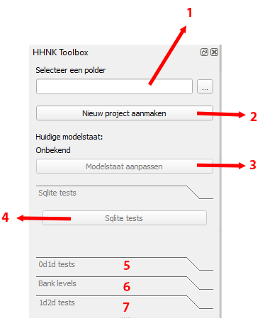
- Polder selecteren
- Nieuw project aanmaken
- Modelstaat aanpassen
- Sqlite tests
- 0d1d tests
- Bank levels
- 1d2d tests
1. Polder selecteren
Selecteer een project map (zie Standaard project indeling voor uitleg over de standaard indeling voor een project). Het is handig maar niet noodzakelijk om een project volgens de standaard indeling in te richten. De meeste functionaliteit van de plugin is alleen beschikbaar wanneer een project is geselecteerd.
2. Nieuw project aanmaken
Wanneer je op deze knop klikt open zich een nieuw venster:
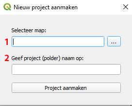
Selecteer een map om het nieuwe project in aan te maken (veld 1). Geef het nieuwe project een naam (de conventie is om het project de naam van het gebied waar het model een weergave van is te geven) in veld 2.
Wanneer je op 'Project aanmaken' klikt wordt er een lege mappenstructuur aangemaakt volgens de standaard projectindeling
(zie project indeling). In de verschillende mappen worden readme files
aangemaakt waarin staat welke files in welke map wordt gezocht.
Het resultaat ziet er als volgt uit:
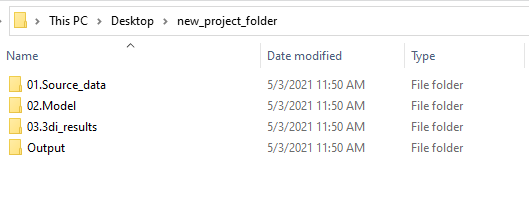
3. Modelstaat aanpassen
Wanneer je op deze knop klikt open zich een nieuw venster:
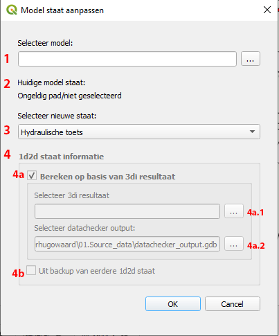
-
Selecteer een model
-
Zodra een model is geselecteerd wordt de huidige staat gedetecteerd (zie Modelstaat aanpassen). Het is belangrijk dat de gedetecteerde staat klopt.
- Kies de staat om het model naar om te zetten
- Deze sectie wordt beschikbaar als we bij 3 '1d2d toets' als nieuwe staat hebben geselecteerd. Er zijn twee opties
wanneer we het model omzetten naar de 1d2d toets staat:
4a. We can calculate the correct configuration from a 3di result -
4a.1
Bereken de 1d2d staat op basis van een 3di resultaat: Selecteer een 3d1 resultaat map (bevat een.ncen een.h5file). Dit resultaat wordt alleen gebruikt om het rekengrid te bepalen. Het maakt dus niet uit of het resultaat een 0d1d of 1d2d som betreft.- 4a.2
Selecteer de datachecker geodatabase die bij het model hoort.
4b. Je kunt er ook voor kiezen om een eerdere 1d2d staat te gebruiken voor het omzetten van het model, mits er een backup beschikbaar is. Deze backup is ook beschikbaar als de
bank levelsal eerder zijn berekend. - 4a.2
Wanneer je op 'OK' klikt worden alle benodigde aanpassingen berekend en voorgelegd aan de gebruiker:
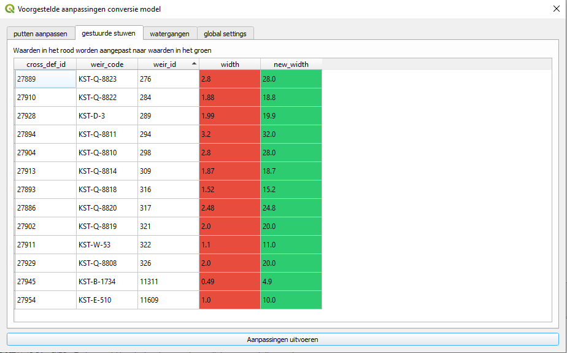
In sommige gevallen kunnen de nieuwe waarden handmatig worden aangepast. In sommige gevallen kunnen bepaalde rijen worden uitgesloten zodat ze niet worden meegenomen in het aanpassen van het model.
Controleer de voorgestelde aanpassingen en klik op 'Aanpassingen uitvoeren' om ze door te voeren. Als er handmatige aanpassingen zijn gedaan of er rijen zijn uitgesloten dan worden deze wijzigingen weergegeven zodat ze kunnen worden opgeslagen:
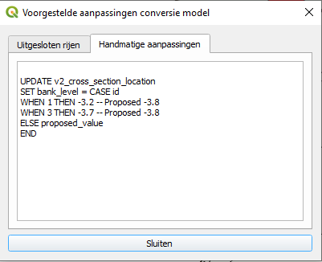
4. Sqlite tests
De sqlite tests zijn bedoeld om het model te controleren op (potentiële) fouten in de data en deze te corrigeren waar nodig. Na de sqlite tests is het model klaar om op te bouwen en om de 0d1d toets te draaien (zie 0d1d toets/Hydraulische toets). Voor de inhoudelijke uitleg van de tests, zie: Sqlite tests
Wanneer je op deze knop klikt open zich een nieuw venster:
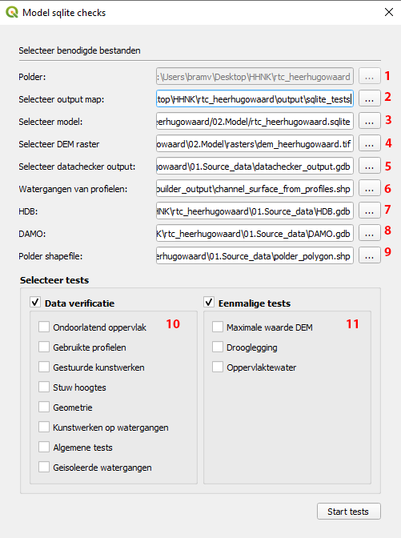
- Polder: alleen-lezen veld waarin de huidige project map wordt weergegeven
- Output map: selecteer de map waar de resultaten in worden opgeslagen (hoeft geen bestaande map te zijn)
- Model: selecteer een model (
*.sqlite) - DEM: selecteer het DEM raster (
*.tif) - Datachecker: selecteer datachecker output (
*.gdb) - Channel surface from profiles: selecteer shapefile (
*.shp) - HDB: selecteer HDB database (
*.gdb) - DAMO: selecteer DAMO database (
*.gdb) - Polder shapefile: selecteer polder shapefile (
*.shp) - Data verificatie: selecteer tests
- Eenmalige tests: selecteer tests
Klik op 'OK' om de tests te starten. De resultaten worden weergegeven als de tests uitgevoerd zijn:
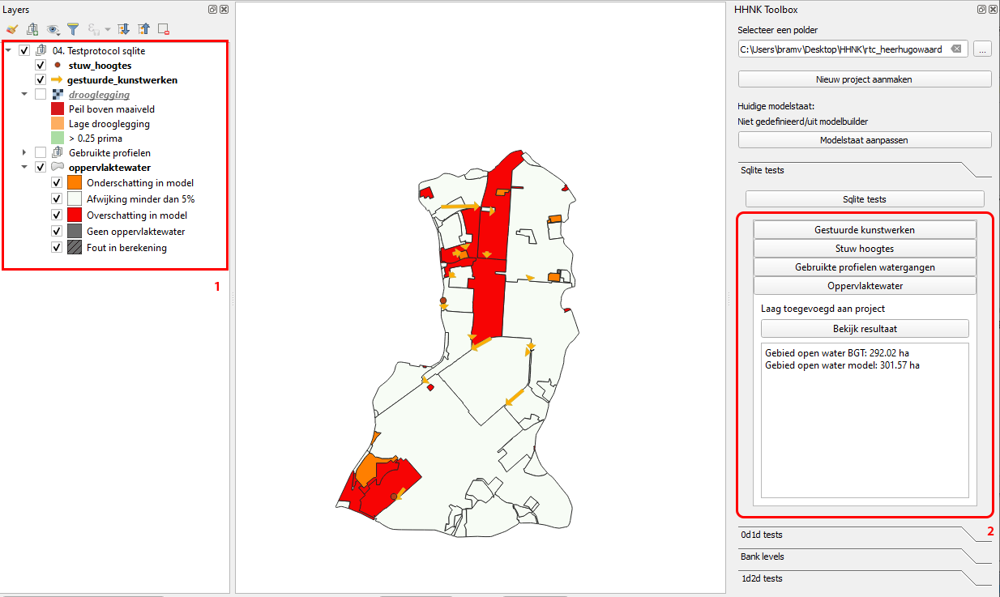
-
De resultaten van sommige tests worden gevisualiseerd als
QGISlagen. Deze lagen worden toegevoegd aan hetlayers panelinQGIS. De bronnen voor deze lagen zijngeopackages (.gpkg). Deze files worden automatisch aangemaakt en opgeslagen in de gekozenOutput map, in deLayerssubmap. -
Een overzicht van de test resultaten wordt weergegeven in de
Sqlite teststab in de toolbox.
De test resultaten worden ook als .csv files in de gekozen Output map in de Logs submap.
5. 0d1d tests
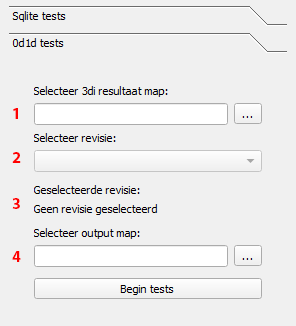
De 0d1d tests zijn bedoeld om de resultaten van de
0d1d toets/Hydraulische toets te analyseren.
-
Selecteer 3di resultaten map: map waarin de 0d1d/hydraulic 3di test resultaten per revisie staan opgeslagen
-
Selecteer 3di revisie: format is normaal gesproken {polder name}{revision number}{type of test} (map die
.ncen.h5files bevat). -
Toont de geselecteerde revisie
- Selecteer map om resultaten in op te slaan
Wanneer je op 'Begin tests' klikt word je gevraagd het 3di scenario te bevestigen. Het scenario moet overeenkomen met het 0d1d toets/hydraulische toets scenario om geldige resultaten te genereren. Als het scenario bevestigd is worden de tests gestart.
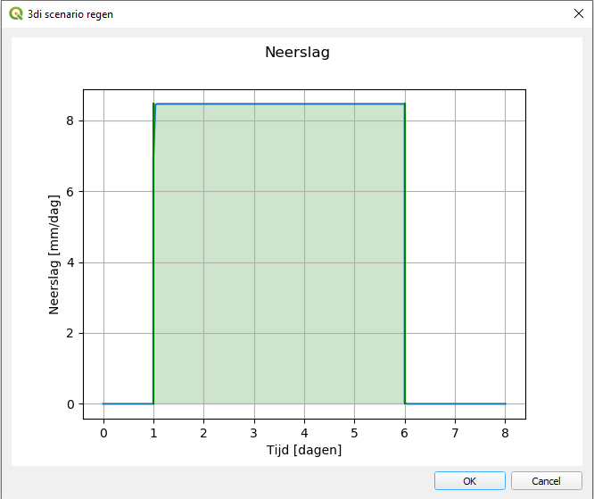
Resultaten van de tests worden als lagen toegevoegd aan QGIS:
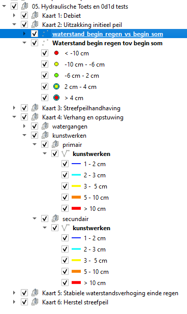
De bronnen voor deze lagen zijn geopackages (.gpkg). Deze files worden automatisch aangemaakt en opgeslagen in de
gekozen Output map, in de map met de naam van de geselecteerde revisie, in de Layers submap. De test
resultaten worden ook als .csv files in de gekozen Output map, in de map met de naam van de geselecteerde
revisie, in de Logs submap.
6. Bank levels test
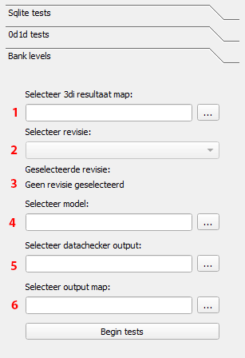
Voor meer informatie over de inhoud van de test, zie: Bank levels
-
Selecteer 3di resultaten map: map waarin de 0d1d/hydraulic 3di test resultaten per revisie staan opgeslagen
-
Selecteer 3di revisie: format is normaal gesproken {polder name}{revision number}{type of test} (map die
.ncen.h5files bevat). -
Toont de geselecteerde revisie
- Selecteer model (
*.sqlite) - Selecteer datachecker output geodatabase (
.gdb) - Selecteer map om resultaten in op te slaan
Klik op 'Begin tests' om de tests te starten. De bank levels test genereert voorgestelde aanpassingen aan het model, die aan de gebruiker worden voorgelegd:
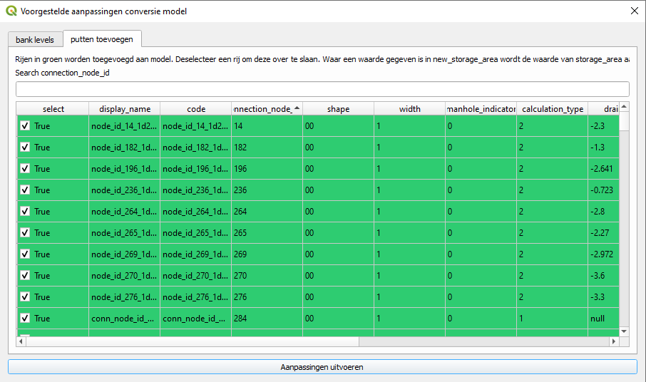
Je kunt manholes deselecteren die je niet aan het model wil toevoegen. Waar nodig kun je de voorgestelde bank levels handmatig aanpassen. Klik op 'Aanpassingen uitvoeren' om de voorgestelde wijzigingen door te voeren. Als er handmatige aanpassingen zijn gemaakt of er rijen zijn uitgesloten, dan worden die wijzigingen weergegeven zodat de gebruiker ze kan opslaan.
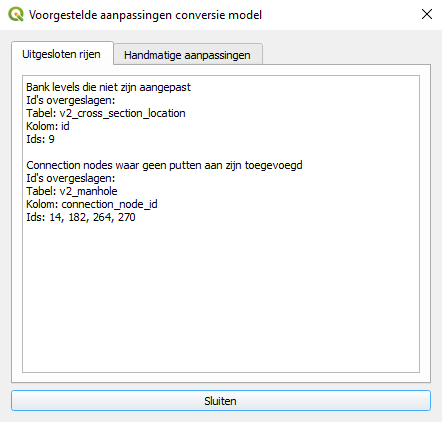
Resultaten van de tests worden als lagen toegevoegd aan QGIS:
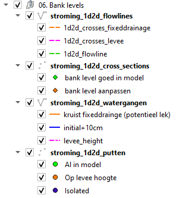
De bronnen voor deze lagen zijn geopackages (.gpkg). Deze files worden automatisch aangemaakt en opgeslagen in de
gekozen Output map, in de Layers submap. De test resultaten worden ook als .csv files in de gekozen
Output map in de Logs submap.
7. 1d2d tests
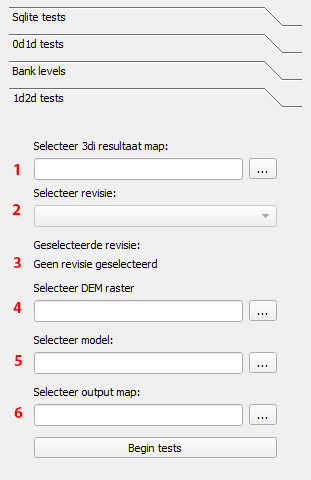
De 1d2d tests zijn bedoeld om de resultaten van de
1d2d toets te analyseren.
-
Selecteer 3di resultaten map: map waarin de 0d1d/hydraulic 3di test resultaten per revisie staan opgeslagen
-
Selecteer 3di revisie: format is normaal gesproken {polder name}{revision number}{type of test} (map die
.ncen.h5files bevat). -
Toont de geselecteerde revisie
- Selecteer DEM raster (
.tif) - Selecteer model (
.sqlite) - Selecteer map om resultaten in op te slaan
Wanneer je op 'Begin tests' klikt word je gevraagd het 3di scenario te bevestigen. Het scenario moet overeenkomen met het 1d2d toets scenario om geldige resultaten te genereren. Als het scenario bevestigd is worden de tests gestart.
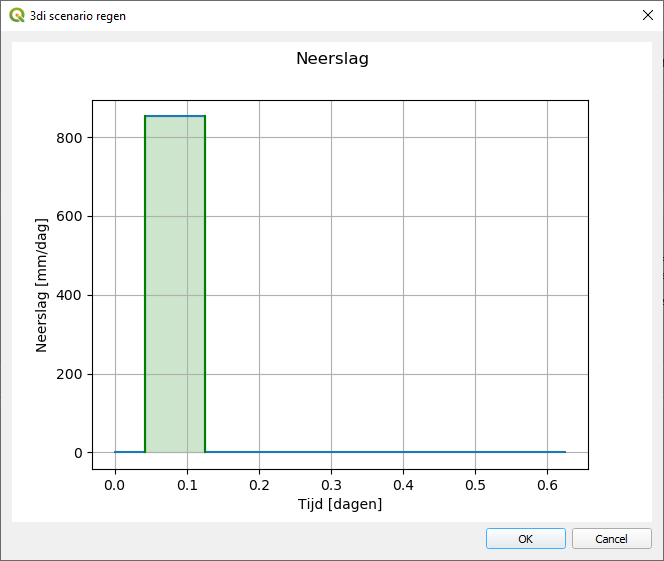
Resultaten van de tests worden als lagen toegevoegd aan QGIS:
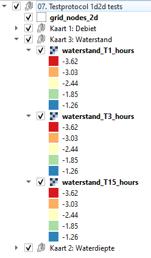
De bronnen voor deze lagen zijn geopackages (.gpkg). Deze files worden automatisch aangemaakt en opgeslagen in de
gekozen Output map, in de map met de naam van de geselecteerde revisie, in de Layers submap. De test
resultaten worden ook als .csv files in de gekozen Output map, in de map met de naam van de geselecteerde
revisie, in de Logs submap.